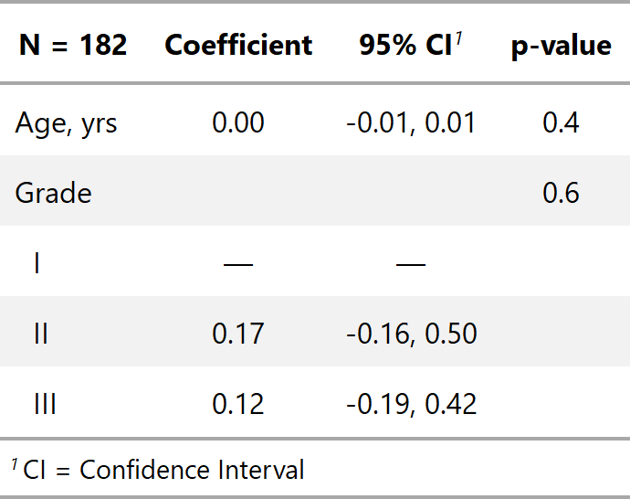

| add_global_p.tbl_regression {gtsummary} | R Documentation |
This function uses car::Anova with argument
type = "III" to calculate global p-values for categorical variables.
## S3 method for class 'tbl_regression'
add_global_p(
x,
include = x$table_body$variable[x$table_body$var_type %in% c("categorical",
"interaction")],
keep = FALSE,
terms = NULL,
...
)
x |
Object with class |
include |
Variables to calculate global p-value for. Input may be a vector of
quoted or unquoted variable names. tidyselect and gtsummary select helper
functions are also accepted. Default is |
keep |
Logical argument indicating whether to also retain the individual
p-values in the table output for each level of the categorical variable.
Default is |
terms |
DEPRECATED. Use |
... |
Additional arguments to be passed to car::Anova |
A tbl_regression object
If a needed class of model is not supported by car::Anova, please create a GitHub Issue to request support.

Daniel D. Sjoberg
Other tbl_regression tools:
add_nevent.tbl_regression(),
bold_italicize_labels_levels,
bold_p.tbl_regression(),
bold_p.tbl_stack(),
combine_terms(),
inline_text.tbl_regression(),
modify_header(),
sort_p.tbl_regression(),
tbl_merge(),
tbl_regression(),
tbl_stack()
tbl_lm_global_ex1 <- lm(marker ~ age + grade, trial) %>% tbl_regression() %>% add_global_p()